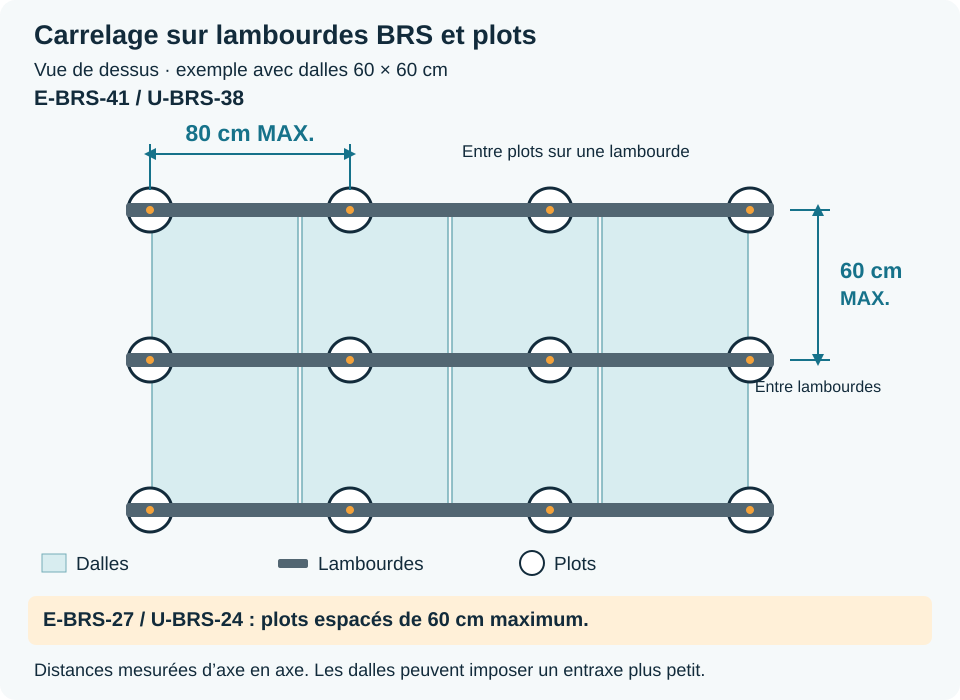

Les consignes Secotech à appliquer avant, pendant et après les travaux.
Édition du 17 octobre 2026 49 fiches pratiques · Français Secotech SRL · 0498 32 49 49 · info@secotech.be
Appliquer les fiches techniques des produits livrés et les détails validés du chantier. En cas de contradiction, arrêter et demander une clarification au gestionnaire de chantier.
Dans ce guide, le « gestionnaire de chantier » est l’interlocuteur désigné par Secotech pour ce chantier. Son nom et son contact doivent être communiqués à l’équipe avant le démarrage. Les consignes de sécurité du chantier et de l’entrepreneur général restent applicables ; les accords commerciaux supplémentaires relèvent de Secotech.
Envoyer les photos dans le dossier du chantier sur OPENBTP ou par WhatsApp au gestionnaire de chantier. Indiquer chantier, zone, date et objet (lot, support, étanchéité, dégât ou contrôle final). Pour une urgence ou un arrêt de travail, appeler : une photo ou un message ne suffit pas.
112 · Urgence grave : 112. Donner l’adresse du chantier, pas celle du siège Secotech.
Avant le collage direct sur plâtre ou anhydrite, appliquer le primaire compatible prescrit. Avant une étanchéité, suivre la préparation propre au produit : ne pas généraliser l’absence de primaire. Pour SafetyGel sur support poreux, la fiche prévoit une couche préparatoire diluée à 10–20 % d’eau, avant les deux couches pures.
Un support très poussiéreux ou absorbant peut nécessiter un traitement spécifique. Vérifier la fiche correspondant au produit livré et au support rencontré.
Avant toute pose, contrôler les sols et les murs avec une règle, un niveau ou un laser. Vérifier aussi les niveaux et les angles.
Une colle appliquée en couche mince ne corrige pas un support hors tolérance. Photographier les défauts avant de commencer.
Illustration · Planéité et aplomb avant travaux
SECOTECHGuide de bonnes pratiques · Français
11 · SupportsCritique
Signalement écrit des supports non conformes
Ne pas commencer sur un support non conforme. Envoyer au gestionnaire de chantier des photos, l’emplacement précis et une description du défaut, puis attendre son instruction.
La trace écrite documente l’état initial et permet de décider des corrections avant la pose.
Illustration · Signalement écrit des supports non conformes
30 · SupportsCritique
Humidité : mesurer avant de poser
Identifier le support et consigner la méthode, le lieu et le résultat de mesure. Pour une chape anhydrite avec X-GEL S1 : humidité résiduelle inférieure à 0,5 % CM, ou inférieure à 0,3 % CM si elle est chauffante, selon Litokol. La mesure de référence est la bombe au carbure (CM), aux emplacements autorisés sans endommager le chauffage. Un testeur électronique sert au repérage et ne remplace pas ce contrôle. Pour une chape ciment ou un autre système, obtenir le seuil applicable avant la pose.
Aucun seuil universel ne convient à toutes les chapes ciment. Retenir les exigences du système et du fabricant de chape ; arrêter si le seuil n’est pas connu ou dépassé.
Sols chauffants : protocole avant et après la pose
Obtenir le procès-verbal de première mise en chauffe et de refroidissement, réalisé selon le fabricant du chauffage et de la chape. Contrôler les fissures, l’humidité et les joints avant la pose. Faire arrêter le chauffage et laisser le support revenir à la température de pose prescrite. Respecter les joints périphériques, de mouvement et de fractionnement. Après durcissement du système complet, remettre en chauffe progressivement selon le protocole validé.
Le carreleur ne modifie pas lui-même les réglages du chauffage. Sans protocole ou conditions validés, ne pas commencer et contacter le gestionnaire de chantier.
Avant la pose, valider les axes, les départs, les coupes visibles et les raccords entre le sol et les murs. Ne pas modifier le calepinage sans accord.
Le contrôle préalable évite les petites coupes visibles et les joints désalignés.
Illustration · Calepinage et alignement des joints
SECOTECHGuide de bonnes pratiques · Français
32 · PréparationRègle Secotech
Contrôle des carreaux et stockage des produits
Avant la pose, vérifier référence, nuance (tonalité), calibre, quantité et absence de défaut visible. PHOTOGRAPHIER SYSTÉMATIQUEMENT les étiquettes ou les boîtes de chaque lot avant de commencer : la référence, le code de nuance, le calibre et le numéro de lot doivent être lisibles sur les photos. Transmettre ces photos au gestionnaire de chantier et les conserver dans le dossier du chantier. Comparer plusieurs boîtes et répartir les nuances selon le rendu validé. Conserver aussi les étiquettes de lots. Stocker les sacs au sec et les liquides à la température prescrite ; vérifier leur date limite.
La photo est obligatoire pour chaque lot, sur chaque chantier, même si les boîtes semblent identiques. Elle permet de retrouver exactement la nuance en cas de complément ou de réparation. Ne pas poser un lot douteux ; signaler les écarts avant utilisation.
Illustration · Contrôle des carreaux et stockage des produits
45 · PréparationTolérance zéro
Ne jamais commencer une pièce sans assez de carrelage pour la terminer
Il est strictement interdit de commencer à carreler une pièce ou un local sans avoir vérifié et confirmé que la quantité de carrelage réellement disponible et réservée suffit pour terminer toute la pièce, avec la même référence, la même nuance (tonalité) et le calibre validé. Compter les carreaux utilisables et prévoir les coupes, la casse et la réserve demandée. Une livraison annoncée ou l’espoir de pouvoir recommander ne suffit pas. EN CAS DE DOUTE OU DE QUANTITÉ INSUFFISANTE : NE PAS COMMENCER. Prévenir le gestionnaire de chantier et attendre la réception puis le contrôle de la quantité complète avant toute pose.
Si le stock manque et que l’usine ne produit plus la même tonalité, un autre lot peut présenter une différence de couleur visible. Il peut alors falloir arracher tout le carrelage déjà posé dans la pièce et recommencer. Ne jamais prendre ce risque, même pour commencer seulement une partie du local.
Illustration · Ne jamais commencer une pièce sans assez de carrelage pour la terminer
SECOTECHGuide de bonnes pratiques · Français
01 · AcoustiqueCritique
Bandes acoustiques périphériques
Dans les appartements, ne jamais couper les bandes acoustiques périphériques avant la pose et le jointoiement du carrelage.
La bande maintient la chape désolidarisée des murs et évite les ponts acoustiques.
Poser les plinthes sur de petites cales, sans contact direct avec le carrelage de sol. En partie haute, remplir le joint entre le mur et la plinthe avec la colle de pose des plinthes, puis araser proprement l’excédent sans salir le mur : c’est bien de la colle, conformément à la consigne Secotech. Après retrait des cales, remplir le joint inférieur avec le mastic souple prévu. Ne jamais mettre de colle dans ce joint inférieur.
Le joint supérieur assure une finition propre, tandis que le raccord inférieur reste souple et ne transmet pas les bruits de choc à la structure.
Illustration · Pose des plinthes et joint souple inférieurSchéma technique · Pose des plinthes et joint souple inférieur
SECOTECHGuide de bonnes pratiques · Français
13 · PoseRègle Secotech
Double encollage dès qu’un côté atteint 60 cm
Chez Secotech, réaliser un double encollage dès qu’au moins un côté du carreau mesure 60 cm ou plus : 60 × 60, 30 × 60 et 30 × 120 cm sont concernés. En dessous, appliquer également cette méthode si le système ou les conditions de pose l’exigent. Contrôler le transfert en soulevant un carreau frais.
Cette consigne couvre les formats carrés et rectangulaires. Garder les sillons parallèles lorsque les deux faces sont peignées.
Couche de contact au dos du carreau · colle peignée sur le support
Utiliser des clips de nivellement dès qu’au moins un côté du carreau mesure 60 cm ou plus, y compris les formats rectangulaires. Pour les formats plus petits, ne les utiliser que sur consigne particulière du gestionnaire de chantier.
Les clips limitent le désaffleurement, mais ne corrigent jamais un support non plan.
Repérer les joints structurels, de fractionnement, de dilatation et périphériques. Répercuter les joints de mouvement de la chape au même emplacement dans le carrelage, sans décalage. Ne jamais les remplir de colle ou de mortier de jointoiement. Toute solution particulière exige un détail technique validé avant la pose.
Maintenir ces joints libres et utiliser le profilé ou le mastic souple prévu. Une natte de désolidarisation ne permet pas de supprimer automatiquement les joints.
Schéma technique · Respect des joints de mouvement
Faire confirmer la largeur des joints avant de commencer selon les carreaux, leurs tolérances, le lieu de pose et le mortier de jointoiement. Utiliser des espaceurs adaptés et contrôler les alignements. Ne jamais poser bord à bord, même avec des carreaux rectifiés.
Le joint ne se choisit pas uniquement pour son aspect. Ne pas réduire sa largeur pour compenser une erreur de calepinage.
Étaler uniquement la surface pouvant être carrelée avant la formation d’une peau. Peigner en sillons droits et parallèles, puis déplacer légèrement le carreau perpendiculairement aux sillons pour les écraser. Soulever régulièrement un carreau et vérifier le contact, notamment aux bords et angles.
Retirer et remplacer la colle ayant formé une peau. Ne pas la remouiller et ne pas poser sur des plots de colle isolés.
Illustration · Colle fraîche, sillons parallèles et transfert
47 · PoseCritique
Froid, chaleur et soleil : contrôler les températures
Mesurer la température de l’air et du support. X-GEL S1 et X-Color 06 : application de +5 à +35 °C ; SafetyGel : de +5 à +40 °C. Pour Pixel 3D, retenir +5 à +35 °C, limite la plus stricte de sa fiche. Protéger des courants d’air, du soleil direct et de la pluie ; ne pas poser sur un support gelé, surchauffé ou avec risque de gel pendant la prise.
Les limites du système complet et les conditions réelles priment. Par chaleur ou vent, la colle peut former une peau en quelques minutes ; réduire la surface encollée et contrôler le transfert.
Appliquer deux couches pures, continues, croisées et sans manque. Réaliser la seconde couche dans un sens perpendiculaire à la première. À +23 °C et 50 % HR, attendre au moins 2 heures entre les couches. À +10 °C, attendre 6 heures.
Le temps réel augmente avec le froid, l’humidité ou une faible ventilation. Contrôler le séchage avant de continuer.
Faire descendre l’étanchéité murale jusqu’au raccord avec le receveur. Le retour sur le receveur doit s’arrêter dans l’emprise du joint de silicone prévu à la jonction mur–receveur, sans déborder sur la surface visible ou utile du bac. Réaliser un raccord continu avec les produits ou accessoires compatibles prévus par le système. Ne jamais arrêter l’étanchéité au-dessus du receveur.
Le joint souple entre le carrelage et le receveur constitue uniquement la finition visible. Il ne peut pas compenser une étanchéité interrompue ou mal raccordée.
Coupe technique · raccord limité à l’emprise du joint de silicone
SECOTECHGuide de bonnes pratiques · Français
16 · ÉtanchéitéCritique
Traversées et raccords étanches
Traiter les conduites, évacuations, angles, raccords mur-sol et raccords au receveur avec les accessoires compatibles prévus par le système.
L’étanchéité doit rester continue. Une improvisation au silicone ne remplace pas une manchette ou une bande prescrite.
SafetyGel Litokol · application au pinceau autour des tuyaux
17 · ÉtanchéitéCritique
Pente et évacuation des douches
Avant l’étanchéité et la pose, contrôler la pente, la hauteur de la grille, le raccord avec la chape et l’absence de contre-pente. Réaliser un essai d’écoulement lorsque possible.
Buildwise recommande une pente minimale de 1,5 % vers l’évacuation pour la chape et le carrelage.
Vue du dessus · pose en diamant vers une évacuation centrale de 10 × 10 cm
Avant de carreler, contrôler la continuité, la consommation ou l’épaisseur requise et le séchage. Vérifier angles, traversées et évacuation selon le système utilisé. Photographier les détails avant qu’ils soient cachés. Réaliser l’essai d’étanchéité prévu, uniquement après le délai et selon la méthode autorisés.
Réparer tout défaut avec une solution compatible avant recouvrement. Ne pas mélanger des accessoires de systèmes différents sans validation.
Illustration · Contrôle avant recouvrement de l’étanchéité
03 · FinitionsStandard
Joint contre une cornière
Conserver un joint régulier entre le carreau et la cornière. Remplir complètement ce joint avec le mortier de jointoiement prévu. Ne jamais poser le carreau directement contre le métal.
Le joint évite le contact direct entre le carrelage et la cornière, protège le chant du carreau et assure une finition régulière.
Correct · joint rempli entre le carreau et la cornièreInterdit · carrelage directement contre la cornière
SECOTECHGuide de bonnes pratiques · Français
04 · FinitionsStandard
Plinthes à 45° aux angles extérieurs
Aux angles extérieurs, réaliser deux coupes propres à 45° et assembler les deux plinthes en onglet, sauf si le plan prévoit un profilé ou une pièce de finition spécifique.
L’angle doit être fermé, aligné et sans chant brut visible.
Finition réelle · angle extérieur assemblé en ongletVue du dessus · deux coupes à 45°
21 · FinitionsRègle Secotech
Tous les trous à la scie-cloche ronde
Tous les trous dans les carrelages doivent être réalisés à la scie-cloche ronde diamantée, adaptée au matériau et au diamètre nécessaire. Les ouvertures carrées réalisées à la disqueuse sont interdites, y compris si elles sont ensuite cachées par une rosace ou un appareillage. Les trous doivent être réguliers, centrés et sans éclat visible.
Un perçage rond propre limite les amorces de fissures et les ouvertures surdimensionnées. Ne jamais masquer une découpe carrée ou défectueuse avec du silicone.
Autorisé : trou rond à la scie-cloche diamantée. Interdit : trou carré à la disqueuse.
SECOTECHGuide de bonnes pratiques · Français
36 · FinitionsCritique
Joints souples propres et continus
Préparer des lèvres propres et sèches. Employer un mastic compatible avec les matériaux et l’usage, avec primaire et fond de joint lorsque prescrits. Respecter la géométrie et la profondeur prévues, lisser sans creux et protéger jusqu’au durcissement.
Le mastic doit pouvoir se déformer. Un joint souple de finition ne remplace jamais l’étanchéité sous le carrelage.
Illustration · Joints souples propres et continus
51 · FinitionsRègle Secotech
Contrôle final et photos avant départ
Avant de quitter la zone, contrôler les joints, rives, plinthes, découpes, raccords et la propreté ; vérifier l’absence de défaut visible. Photographier les vues générales et les détails, identifier les éventuelles réserves et les protections laissées en place. Envoyer le tout dans OPENBTP ou par WhatsApp au gestionnaire de chantier, avec chantier, zone et date. Communiquer les délais de remise en service et demander le contrôle de fin de travaux.
Le départ de l’équipe ne vaut pas réception des travaux. Les réserves doivent être suivies et levées selon les instructions du gestionnaire de chantier.
SECOTECHGuide de bonnes pratiques · Français
07 · ProduitsCritique
Préparation de X-GEL S1
Pour un sac gris de 20 kg, utiliser 6,0 à 6,6 litres d’eau. Pour un sac blanc de 20 kg, utiliser 6,2 à 6,8 litres. Verser l’eau mesurée, ajouter la poudre progressivement et mélanger jusqu’à obtenir une pâte homogène. Attendre 5 minutes, puis mélanger brièvement une seconde fois.
Deux passages au mélangeur sont nécessaires. Ne jamais rajouter d’eau lorsque la pâte commence à prendre.
Étaler X-GEL S1 sur le support avec un platoir cranté de denture adaptée au format du carreau et au support. Garder des sillons droits et parallèles. Poser le carreau dans la colle encore fraîche, puis soulever régulièrement un carreau pour contrôler le transfert et ajuster la méthode si nécessaire.
La pâte reste utilisable 6 à 8 heures et le temps ouvert dépasse 40 minutes uniquement dans les conditions de référence.
Poser les plots sur un support stable, rigide et suffisamment porteur. Nettoyer la surface, vérifier l’écoulement sous la terrasse et préserver la membrane d’étanchéité. Prévoir les protections compatibles avec le support.
Le vide sous les dalles ne remplace pas le drainage du support. La fiche PB réserve la circulation aux piétons, sans véhicules ni équipements vibrants.
Illustration · Contrôler le support et le drainage
Choisir chaque plot dans sa plage de réglage. Si le niveau fini doit compenser la pente du support, utiliser le correcteur compatible prévu. Poser les croisillons correspondant au joint choisi et les amortisseurs adaptés. Contrôler le niveau et l’appui de chaque dalle.
Les joints restent ouverts pour laisser passer l’eau. Aucun plot ne doit être flottant et aucune dalle ne doit basculer au passage.
Illustration · Régler les plots et conserver les joints ouverts
Prévoir les accessoires de rive du système. Contre un mur, le U-WALL-PP maintient un espace de 5 mm. Pour les découpes périphériques de 2 à 14 cm, Buzon propose le support U-EDGE avec l’interface de fixation adaptée au plot.
Les coupes doivent être soutenues et maintenues. Prévoir les ailettes et amortisseurs compatibles ; ne pas laisser une petite pièce en équilibre.
U-WALL-PP monté sur un plot · photo officielle Buzon
Respecter l’implantation des appuis aux angles, sur les côtés et au centre selon le format. Les schémas ci-dessous reprennent les positions recommandées par Buzon pour les formats représentés.
Compter les plots sur le plan complet de la terrasse, en tenant compte des appuis partagés, des rives et des découpes.
Chaque cercle représente un appui sous la dalle. Les appuis de bord et d’angle peuvent être partagés : ne pas multiplier simplement ces nombres par le nombre de dalles.
40 × 40 cm 4 appuis
4 angles
50 × 50 cm 4 appuis
4 angles
60 × 60 cm 4 appuis
4 angles
75 × 75 cm 5 appuis
4 angles + centre
80 × 80 cm 5 appuis
4 angles + centre
90 × 90 cm 9 appuis
4 angles + 4 milieux de côté + centre
100 × 100 cm 9 appuis
4 angles + 4 milieux de côté + centre
120 × 30 cm 6 appuis
4 angles + milieu des 2 grands côtés
120 × 40 cm 6 appuis
4 angles + milieu des 2 grands côtés
120 × 60 cm 6 appuis
4 angles + milieu des 2 grands côtés
90 × 45 cm 6 appuis
4 angles + milieu des 2 grands côtés
Positions du catalogue Buzon PB 2025, p. 105, pour la pose directe sur plots. Le fabricant des dalles et les conditions du chantier peuvent imposer des appuis supplémentaires. Faire confirmer les formats non représentés et les poses décalées.
Sur E-BRS-41 ou U-BRS-38 : 80 cm maximum entre les axes des plots sous une même lambourde. Sur E-BRS-27 ou U-BRS-24 : 60 cm maximum. Entre les axes de deux lambourdes : 60 cm maximum, à réduire selon le format, la résistance des dalles et les prescriptions du fabricant. Ne pas confondre ces deux entraxes.
Mesurer les entraxes d’axe en axe. Le modèle de lambourde et le format des dalles déterminent les appuis nécessaires.

Schéma BRS · 80 cm maximum entre plots pour les modèles hauts, 60 cm maximum entre lambourdes
La protection du carrelage terminé n’est pas un travail systématique : la réaliser UNIQUEMENT SUR DEMANDE EXPRESSE DES GESTIONNAIRES DE CHANTIER. Après leur demande et après durcissement suffisant, poser la protection prévue contre les chocs, rayures, poussières abrasives et passages des autres entreprises.
Faire confirmer la zone et le type de protection demandés. Employer une protection propre, adaptée et non tachante ; vérifier la compatibilité des adhésifs. Dérouler la protection sur le carrelage encore découvert, sans recouvrir une zone déjà protégée.
Protection sur demande expresse du gestionnaire de chantier · déroulage sur le carrelage découvert
24 · ProtectionCritique
Protection du receveur avant les travaux
Avant de commencer l’étanchéité ou le carrelage, nettoyer soigneusement le tub de douche. Poser ensuite un carton de protection propre, découpé aux dimensions du receveur, puis le fixer au tub avec un adhésif compatible qui ne laisse pas de résidus. Ne commencer les travaux qu’après cette protection.
Le carton fixé protège le receveur contre les rayures, les chocs, les outils, la colle et les résidus d’étanchéité pendant toute l’intervention.
Nettoyer · ajuster le carton · fixer la protection
SECOTECHGuide de bonnes pratiques · Français
37 · ProtectionCritique
Délais avant circulation et mise en eau
Baliser jusqu’à l’expiration des délais du système. Pour X-GEL S1 à +23 °C et 50 % HR : jointoiement mural après 6 à 8 h, au sol après 12 h, circulation piétonne après 12 h, mise en service après 5 jours. Avec X-Color 06 : circulation après 24 h et mise en service après 7 jours. Pixel 3D : circulation après 24 h et mise en service après 5 jours à +23 °C.
Pour une douche, la mise en eau attend le durcissement complet de tous les composants : retenir le délai le plus long, adapté aux conditions réelles et validé pour le système. Voir le tableau produits ; ne pas confondre peau sèche du mastic et durcissement à cœur.
Illustration · Délais avant circulation et mise en eau
38 · ProtectionCritique
Nettoyage final adapté au revêtement
Utiliser le produit et la méthode compatibles avec le carrelage, les joints, les pierres et les profilés. Faire un essai discret, respecter dilution et rinçage, puis retirer les résidus. Protéger les éléments sensibles pendant l’opération.
Ne pas utiliser d’acide sur une pierre calcaire ni un produit agressif sans vérification. Ne pas verser les eaux chargées de colle ou de ciment dans les évacuations.
Illustration · Nettoyage final adapté au revêtement
SECOTECHGuide de bonnes pratiques · Français
39 · SécuritéCritique
Découpes : limiter les poussières de silice
Privilégier les coupes manuelles adaptées, le travail à l’eau avec un outil prévu pour cela ou le captage à la source. Isoler le poste et protéger les autres intervenants. Aspirer avec un matériel adapté aux poussières dangereuses ou nettoyer à l’humide ; ne pas balayer à sec ni souffler à l’air comprimé.
La découpe extérieure ne suffit pas à supprimer le risque. Compléter les protections collectives par la protection respiratoire prescrite pour le poste.
Illustration · Découpes : limiter les poussières de silice
Porter les protections adaptées : chaussures de sécurité, lunettes, protections auditives, gants compatibles avec la tâche et genouillères. Contrôler outils, disques, carters et câbles ; débrancher avant changement d’accessoire. Pour les grandes dalles, utiliser des aides de manutention adaptées et travailler à plusieurs si nécessaire.
Retirer du service tout outil défectueux. Protéger les câbles de l’eau et ne jamais enlever un carter pour faciliter une coupe.
Illustration · Équipements, outils et manutention
SECOTECHGuide de bonnes pratiques · Français
48 · SécuritéTolérance zéro
Accueil sécurité, PSS et protections adaptées
Avant intervention, suivre l’accueil sécurité et prendre connaissance du plan de sécurité et de santé (PSS) applicable : accès, évacuation, secours et risques du poste. Pour les travaux en hauteur, utiliser le matériel autorisé, stable et contrôlé ; pas d’appui improvisé ni de travail depuis une échelle non adaptée. Les colles et joints cimentaires sont alcalins : porter gants adaptés et lunettes ; appliquer la FDS. En cas de projection, rincer immédiatement et abondamment à l’eau, alerter le secouriste et suivre la FDS. Alcool et drogues interdits pendant le travail ; ne pas travailler avec des facultés altérées.
Si l’accueil, les protections ou les conditions sûres manquent, arrêter et prévenir le gestionnaire de chantier. Les protections collectives restent prioritaires.
Accident ou quasi-accident : protéger, alerter, signaler
Arrêter l’activité et sécuriser sans se mettre en danger. En cas d’urgence grave, appeler le 112 sans attendre Secotech : donner l’adresse exacte du chantier, l’accès, la nature de l’accident et le nombre de victimes. Suivre les instructions de l’opérateur et prévenir le secouriste du chantier. Faire guider les secours et libérer l’accès. Informer ensuite le gestionnaire de chantier et Secotech au 0498 32 49 49.
Signaler aussi tout quasi-accident et conserver les faits utiles dans OPENBTP ou WhatsApp. Ne pas retarder les secours pour prendre des photos. Ne reprendre qu’après suppression du danger et accord du gestionnaire de chantier.
Ne jamais uriner dans une bouteille ou un récipient. Ne jamais utiliser les sanitaires du bâtiment en construction. Utiliser exclusivement les toilettes de chantier.
Tout problème d’accès ou d’entretien doit être signalé immédiatement au gestionnaire de chantier.
Bouteilles et sanitaires du bâtiment interdits · toilettes de chantier obligatoires
19 · Vie de chantierCritique
Rangement quotidien des zones de travail
À la fin de chaque journée, ranger et nettoyer toutes les zones de travail. Évacuer les déchets, retirer les seaux et emballages vides, nettoyer les traces de colle, de boue, de poussière ou d’eau, puis stocker les outils et les matériaux dans la zone prévue.
Les passages, accès et issues doivent rester propres, libres et sûrs pour les autres entreprises et pour la reprise du travail le lendemain.
Évacuer · nettoyer et ranger · laisser les passages libres
SECOTECHGuide de bonnes pratiques · Français
20 · Vie de chantierTolérance zéro
Dégâts et erreurs signalés immédiatement
Signaler tout dégât, erreur, casse, fuite ou dommage avec des photos et l’emplacement précis. Ne pas cacher le problème et ne pas poursuivre sans instruction.
Un signalement rapide limite les réparations et les coûts.
Constater · photographier · localiser · arrêter et signaler
22 · Vie de chantierCritique
Tri et évacuation séparée des déchets
Séparer les déchets inertes, les cartons et les déchets tout-venant dans les contenants ou zones prévus. Ranger les chutes de carrelage à plat, en piles stables sur une palette dédiée. Évacuer régulièrement chaque catégorie sans les mélanger et maintenir les déchets stockés à l’abri de la pluie.
Le tri facilite l’évacuation réglementaire, évite la contamination des flux et empêche les cartons ou emballages mouillés de souiller le chantier.
Cartons · chutes de carrelage rangées à plat · tout-venant et plastiques
SECOTECHGuide de bonnes pratiques · Français
23 · Vie de chantierCritique
Découpes à l’extérieur après les finitions
Dès que les travaux de peinture ou la pose des menuiseries commencent, ne plus effectuer de découpe à la disqueuse à l’intérieur. Installer le poste de découpe à l’extérieur, dans la zone autorisée, puis nettoyer les poussières et résidus produits.
Les poussières abrasives de découpe endommagent les peintures, les menuiseries, les vitrages et les ouvrages déjà terminés.
Interdit à l’intérieur après les finitions · poste de découpe à l’extérieur
41 · Vie de chantierRègle Secotech
Horaires, voisinage et interdiction de fumer
Respecter les horaires et les zones de travail autorisés. Prévenir le gestionnaire de chantier avant une intervention bruyante ou poussiéreuse et coordonner le passage des autres métiers. Règle Secotech : ne pas fumer ni vapoter dans les bâtiments ; utiliser seulement la zone extérieure autorisée.
Respecter les occupants et leurs biens. Garder les accès et issues libres et signaler immédiatement toute situation dangereuse.
Illustration · Horaires, voisinage et interdiction de fumer
SECOTECHGuide de bonnes pratiques · Français
44 · Vie de chantierTolérance zéro
Ne jamais vider les seaux dans les évacuations
Il est interdit de vider les seaux de nettoyage de colle ou de mortier de joint dans un évier, un lavabo, des toilettes, une douche, un siphon de sol ou un caniveau de rue destiné aux eaux pluviales. Recueillir l’eau sale dans un récipient étanche et laisser décanter. Déposer uniquement les résidus solidifiés dans la benne de déchets minéraux prévue, selon les consignes du gestionnaire de chantier. Garder l’eau restante en récipient jusqu’à son traitement ou son enlèvement autorisé.
Les résidus peuvent durcir et obstruer les canalisations. Même après décantation, l’eau restante ne doit pas être versée dans une évacuation sans consigne explicite du gestionnaire de chantier.
Interdit : eau sale dans le caniveau · résidus solidifiés dans la benne de déchets minéraux, eau liquide conservée à part
50 · Vie de chantierRègle Secotech
Travaux supplémentaires et métrés
Aucun travail supplémentaire sans accord écrit préalable de Secotech précisant la zone, la prestation et ses conditions. En cas d’imprévu, sécuriser puis demander une instruction écrite. Établir les métrés et décomptes par zone et par poste selon les normes de mesurage applicables et les pièces du marché ; identifier la règle retenue pour ouvertures, déductions et accessoires. Joindre les relevés et les faire vérifier avant facturation.
Quantités, ouvertures, accessoires et chutes sont traités selon les règles de mesurage retenues au marché. Toute ambiguïté doit être clarifiée par écrit avant exécution.
Données de référence Litokol : +23 °C, 50 % HR, sauf indication contraire. Adapter aux conditions réelles et à la fiche du produit livré. Les temps s’additionnent entre étapes successives ; pour une même remise en service, respecter tous les composants.
Produit
Eau / préparation
Temps de travail
Avant l’étape suivante
Circulation
Mise en service
Application
X-GEL S1
Gris : 6,0–6,6 L / 20 kg. Blanc : 6,2–6,8 L / 20 kg. Repos 5 min.
Pâte : 6–8 h. Temps ouvert > 40 min.
Jointoiement : mur 6–8 h ; sol 12 h.
12 h
5 jours ; piscines 14 jours.
+5 à +35 °C
SafetyGel
Prêt à l’emploi ; couches pures après préparation du support.
Attendre le séchage complet entre couches.
Entre couches ET avant carrelage : 2 h ; à +10 °C : 6 h.
Membrane à recouvrir ; pas de circulation directe.
Le système complet détermine la remise en service.
+5 à +40 °C
X-Color 06
5,6–6,0 L / 20 kg (28–30 %).
Pâte : environ 40 min.
Nettoyage à l’éponge : environ 20–25 min, vérifier la prise.
24 h
7 jours ; piscines 14 jours.
+5 à +35 °C
Pixel 3D
Prêt à l’emploi ; aucun ajout d’eau.
Formation de peau : environ 15 min.
Durcissement à cœur : environ 2–3 mm / 24 h.
24 h à +23 °C
5 jours à +23 °C.
Retenir +5 à +35 °C ; idéal +15 à +25 °C.
Pour une douche : attendre le durcissement complet de l’étanchéité, de la colle, des joints et du mastic. La formation d’une peau n’autorise pas la mise en eau. Faire confirmer le délai du système complet.
Je confirme avoir reçu et compris cette édition du guide et les consignes du chantier. Je sais à qui signaler un problème et m’engage à demander une explication si une consigne n’est pas comprise. Cette signature ne remplace ni l’accueil sécurité, ni les formations, ni la réception des travaux.